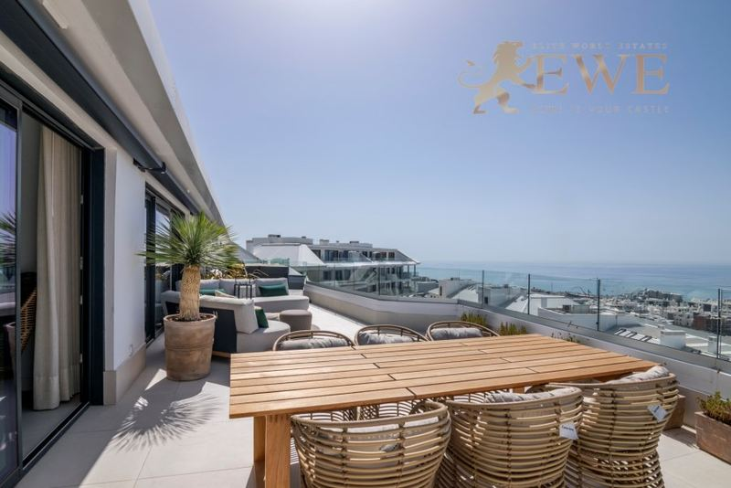
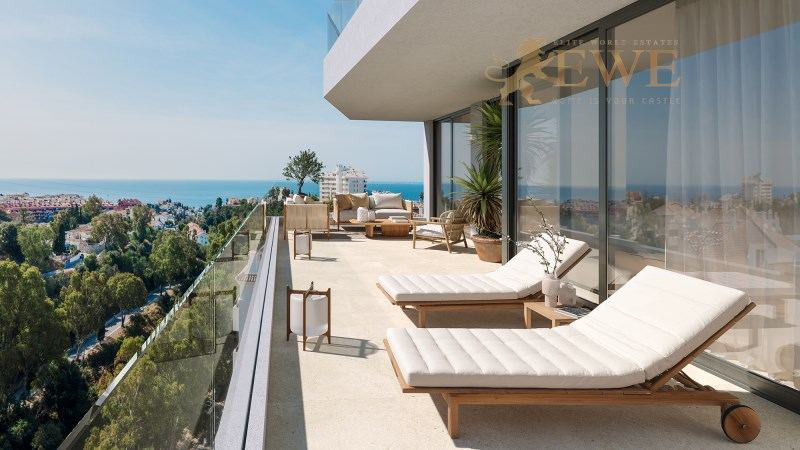
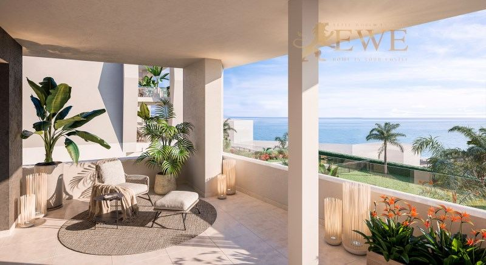
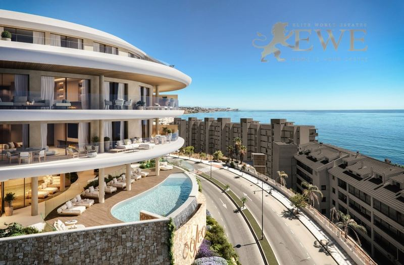
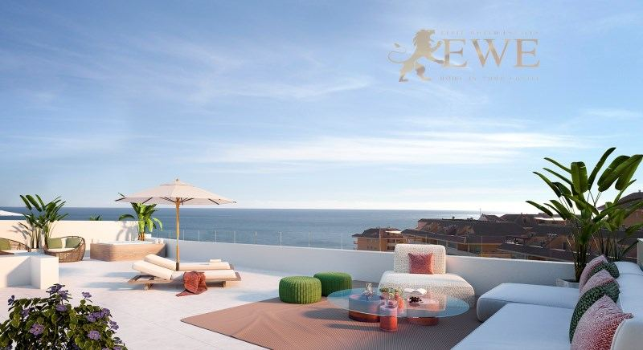
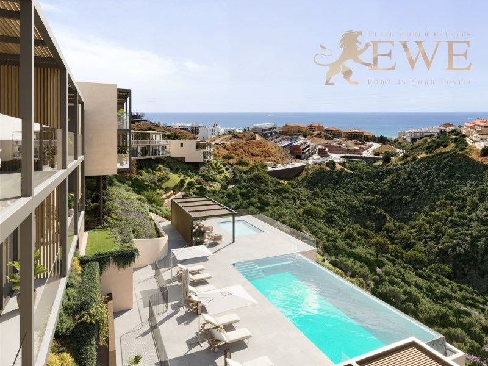
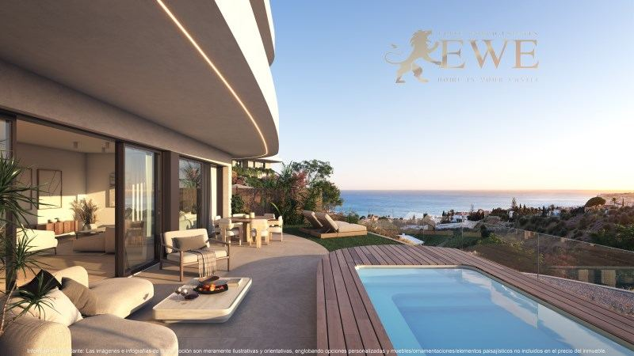
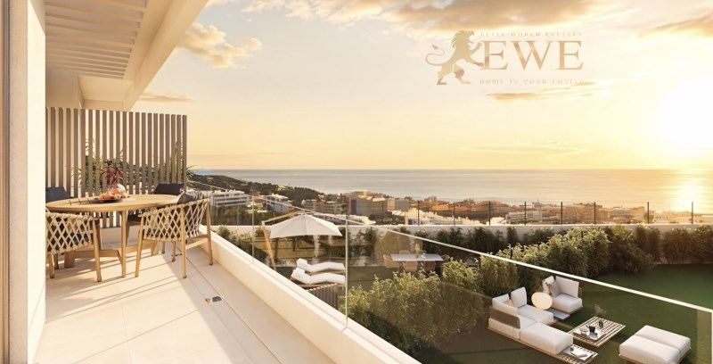
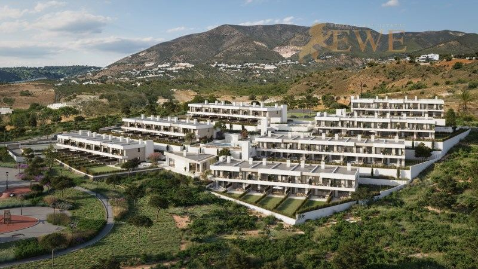
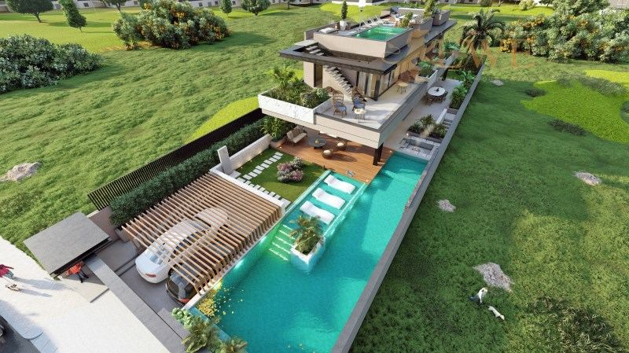

Costa del Sol · Fuengirola
Immobilien zum Verkauf in Fuengirola
Wohnungen mit Meerblick nahe am Strand und moderne Reihenhäuser und Villen in den Hügeln von El Higuerón. Hier finden Sie die Immobilien, die wir heute in Fuengirola verkaufen, mit einem kurzen Überblick über die Viertel und die echten Kaufkosten.
- 10Immobilien zum Verkauf in Fuengirola
- ab 450.000 €für eine neue Wohnung
- ca. 25 Min.mit dem Zug zum Flughafen Málaga
- ca. 7 kmSandstrände
Jetzt zu verkaufen
Immobilien zum Verkauf in Fuengirola
Wohnungen und Penthäuser mit 2 oder 3 Schlafzimmern nahe am Strand und neue Reihenhäuser und Villen mit eigenem Pool und Meerblick in El Higuerón. Die Preise sind die heutigen Angebotspreise; fragen Sie uns nach der aktuellen Verfügbarkeit.

Fuengirola
Modern Ready-to-Move-In Apartments in El Higuerón
450.000 €
2 Schlafzimmer · 2 Bäder · 75 m²Ref. EWE3782

Fuengirola
New Apartments with Sea Views in Torreblanca, Fuengirola
545.000 €
3 Schlafzimmer · 2 Bäder · 80 m²Ref. EWE3843

Fuengirola
Excellent apartment overlooking the sea and 350 m from the beach in Fuengirola
567.000 €
2 Schlafzimmer · 2 Bäder · 69.69 m²Ref. EWE2386

Fuengirola
A stunning sea-view apartment in the town of Fuengirola
725.000 €
2 Schlafzimmer · 2 Bäder · 87 m²Ref. EWE3678

Fuengirola
Furnished penthouse with sea views, 350 m from the beach in Fuengirola
795.000 €
2 Schlafzimmer · 2 Bäder · 87.35 m²Ref. EWE2387

Fuengirola
Modern townhouses in El Higuerón
797.000 €
3 Schlafzimmer · 3 Bäder · 119 m²Ref. EWE3815
Fertigstellung: 4Q 2028

Fuengirola
Luxury Homes with Private Pool and Sea Views in El Higuerón
950.000 €
4 Schlafzimmer · 3 Bäder · 170 m²Ref. EWE3777

Fuengirola
Modern townhouses just 2 km from the beach in El Higuerón
995.000 €
3 Schlafzimmer · 3 Bäder · 135 m²Ref. EWE3783
Fertigstellung: 4Q 2028

Fuengirola
Contemporary townhouses in El Higuerón
995.000 €
3 Schlafzimmer · 3 Bäder · 133 m²Ref. EWE3814
Fertigstellung: 4Q 2028

Fuengirola
Prestigious villa with panoramic sea views in El Higuerón
3.200.000 €
4 Schlafzimmer · 3 Bäder · 399 m²Ref. EWE3868
Die Stadt
Leben in Fuengirola
Fuengirola ist eine lebendige Küstenstadt mit rund 85.000 Einwohnern an der Costa del Sol, zwischen Málaga und Marbella. Sie hat rund 7 km Sandstrand entlang einer langen Promenade, und am Westende der Stadt steht die Burg Sohail auf einem Hügel am Fluss.
Hier lässt es sich das ganze Jahr praktisch leben, mit allem zu Fuß: Geschäfte, Märkte, Restaurants, Schulen und Gesundheitszentren. Die Vorortbahn fährt an der Küste entlang zum Flughafen Málaga und in die Stadt Málaga, deshalb leben viele Menschen hier ohne Auto.
Über der Stadt liegt El Higuerón, ein neueres Wohngebiet auf den Hügeln, mit modernen Häusern und weitem Meerblick. Der Flughafen Málaga ist mit Zug oder Auto etwa 25 Minuten entfernt, Marbella etwa 30 Minuten.
Wo kaufen
Die wichtigsten Viertel von Fuengirola
Zentrum und Strandpromenade
Die Promenade, die Strände und das Stadtzentrum mit Geschäften und Restaurants. Wohnungen und Penthäuser nahe am Meer.
Los Boliches
Der östliche Teil der Stadt, mit eigenem Strand, Bahnhof und Läden. Wohnungen zum Leben das ganze Jahr.
Torreblanca
Ein Hangviertel am Stadtrand, nahe am Strand und an der Bahn. Neue Wohnungen mit Meerblick.
El Higuerón
Ein neueres Viertel auf den Hügeln über Fuengirola, mit modernen Reihenhäusern und Villen mit eigenem Pool und weitem Meerblick.
Budget
Was der Kauf in Fuengirola kostet
Zum Kaufpreis kommen Steuern und Gebühren. Für eine neue Immobilie zu 545.000 € sind das zum Beispiel 54.500 € Mehrwertsteuer und 6.540 € Stempelsteuer, dazu Notar, Grundbuch und Anwalt. Für Bestandsimmobilien gelten andere Steuern, fragen Sie uns also immer nach der genauen Summe für die Immobilie, die Ihnen gefällt.
| Neubau | 10 % Mehrwertsteuer (IVA) + 1,2 % Stempelsteuer (AJD) |
|---|---|
| Bestandsimmobilie | 7 % Grunderwerbsteuer (ITP) |
| Notar, Grundbuch, Anwalt | ca. 1,5–2,5 % des Preises |
| Jedes Jahr | Grundsteuer IBI und Gemeinschaftskosten, je nach Immobilie |
Fragen
Immobilienkauf in Fuengirola: Fragen und Antworten
Was kostet eine Wohnung in Fuengirola?
Unsere Wohnungen in Fuengirola beginnen heute bei 450.000 €, die meisten mit 2 oder 3 Schlafzimmern kosten zwischen 450.000 € und 800.000 €, je nach Aussicht und Entfernung zum Strand. Reihenhäuser in El Higuerón gibt es ab etwa 800.000 €, eine große Villa mit Panorama-Meerblick kostet 3,2 Mio. €.
Kann man in Fuengirola ohne Auto leben?
Ja. Fuengirola ist kompakt und am Meer flach, mit Geschäften und Versorgung zu Fuß, und die Vorortbahn fährt zum Flughafen Málaga und in die Stadt Málaga.
Wie weit ist Fuengirola vom Flughafen entfernt?
Der Flughafen Málaga ist mit dem Auto oder der Vorortbahn etwa 25 Minuten entfernt.
Welche Kosten kommen zum Kaufpreis hinzu?
In Andalusien zahlen Sie bei einem Neubau 10 % Mehrwertsteuer und 1,2 % Stempelsteuer, bei einer Bestandsimmobilie 7 % Grunderwerbsteuer. Notar, Grundbuch und Anwalt kosten zusammen etwa 1,5–2,5 %.
Können Ausländer in Fuengirola eine Immobilie kaufen?
Ja. Jeder kann in Spanien eine Immobilie kaufen. Sie brauchen eine spanische Steuernummer (NIE) und meist ein spanisches Bankkonto, und wir helfen Ihnen bei beidem. Mehr dazu in unserem Ratgeber zur NIE-Nummer.
Aus unserem Blog
Lesen Sie vor dem Kauf

Sie suchen ein Zuhause in Fuengirola?
Nennen Sie uns Ihr Budget und Ihre Wünsche. Wir antworten innerhalb eines Werktags, auf Deutsch, Englisch, Spanisch oder Polnisch.